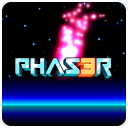

Hochschule Coburg Minigames!
Über Autor und Projekt
Zu meiner Person...
Hallo! Mein Name ist Rusty Garret Wrenn. Ich studiere derzeit technische Physik an der Hochschule Coburg.
Schon als ich 17 war, habe ich mir mit Lernvideos in meiner Freizeit die Grundlagen von Programmiersprachen
wie C++, C# und Python beigebracht. Anlass dafür war, dass ich als Kind gerne Videospiele gespielt habe
und große Freude an den angebotenen Mods und Frameworks fand, die mir erlaubt haben, Welten zu kreieren und
Funktionen darin zu skripten. Eine Programmiersprache zu lernen war also der einzig logische nächste Schritt, um
meine Kenntnisse und mein Verständnis zu erweitern.
Allerdings habe ich in meiner schulischen Laufbahn entdecken können, wie vielseitig und nützlich programmieren
eigentlich sein kann, sowohl in der Wissenschaft, als auch in der Industrie. Deshalb haben mir die Informatik-Kurse
an der Hochschule und die vielen Anwendungsmöglichkeiten in den Physik und Elektrotechnik Modulen in meinem Studium
ziemlich großen Spaß gemacht. Ich würde mich aber bei Weitem nicht als besonders guten Coder bezeichnen, aber mit
diesem Webseiten-Projekt habe ich sehr viel lernen können. Ich werde auf dieser Seite grob mein Vorgehen bei
den einzelnen JavaScript Projekten und warum nicht nur richtige Spiele aufgelistet sind. Um den Code etwas nachvollziehen
zu können, werde ich hier auch den Link zu meiner GitHub Repository
stellen, wo die Daten für die Live Webseite ruhen.
Phas3r Demo
 Nachdem ich die verschiedenen Routes mit dem Bottle Framework verknüpft und die CSS Datei einigermaßen definiert hatte, musste ich in Erfahrung bringen, wie ich ein Browserspiel programmieren kann und vielmehr wie ich das Spiel in den Bottle Framework einbinden kann. Bei der Suche bin ich auf Phaser 3 gestoßen, welches sehr gut dokumentiert und unterstützt ist. Da ich erstmal sehen wollte, ob das Einbetten mit Bottle überhaupt funktioniert, habe ich die schon vorprogrammierte Demo des Spielengines verwendet, um das Spielfenster auf der Seite zu platzieren. Die Phaser 3 Programme verwenden Javascript, also konnte ich die Skripte auf den jeweiligen HTML Seiten erfolgreich ausführen, solange das Programm kein Fehler aufweist und das Phaser 3 Framework unter den Serverdaten liegt. Da die Demo relativ angenehm anzuschauen ist, habe ich sie einfach drin gelassen.
Platformer Spiel
Die Anfänge des Spiels stammen aus dem "getting started" Tutorial von der offiziellen Phaser 3 Webseite. Anfangs habe ich alles perfekt nach Anleitung gemacht, aber nachdem diese vorbei war, habe ich das Spiel um einiges erweitert. Die originale Version hatte beim Springen ein schwebendes Gefühl, weshalb ich die Schwerkraft und die Sprungkraft des Charakters um einiges erhöht habe, um das Springen etwas schneller geschehen zu lassen. Das Einfügen des Tons (Springen, Sammeln, Kollision) hat das Spielerlebnis um einiges aufgewertet, da man über Lautsprecher ein Feedback erhält. Ich habe die Runden Anzeige eingefügt, da man das etwas leichter festhalten kann, als den "Score", der sich nach der Anzahl der gesammelten Sterne richtet und die Möglichkeit gegeben, nach dem Verlieren neu zu beginnen und währenddessen sein High Score in Runden vor Augen zu behalten. Außerdem habe ich den Hintergrund und die Platformen durch meine eigenen Paint.net Kreationen ersetzt. Bekanntlich ist der Platformer eines der aufbringendsten Genres in der Videospiel-Geschichte. Deshalb habe ich, ohne die verspielte Atmosphäre zu brechen, die nervigste Musik eingefügt, die ich im Internet finden konnte.
Space Game
 Nachdem ich den Platformer erstellt habe, ist mir aufgefallen, dass mir die Kenntnisse fehlen, um verschiedene Ebenen eines Spiels zu erstellen, sei es Menüs
oder weitere Level in einem Spiel. In Phaser nennt man das Scenes. Dafür habe ich den Scenetest zusammengestellt, aber auch, um mit klickbaren Objekten zu experimentieren.
Als ich mich damit vertraut gemacht hatte, machte ich mich an die Grundbausteine des Space Games (mir ist kein richtiger Name eingefallen). Weder die "Kamera" noch das Raumschiff
bewegen sich auf der Spielfläche. Um ein Fortschritt zu simulieren, habe ich die Objekte (den Boden, das Meer, den Himmel) bei unterschiedlichen Geschwindigkeiten unten wegschweben
lassen. Die meisten Grafiken, abgesehen vom Raumschiff und den Flugzeugen, habe ich selber gemalt. Besonders stolz bin ich auf den Radar Sprite, der auf dem Flugkontrollturm steht.
Nachdem ich den Platformer erstellt habe, ist mir aufgefallen, dass mir die Kenntnisse fehlen, um verschiedene Ebenen eines Spiels zu erstellen, sei es Menüs
oder weitere Level in einem Spiel. In Phaser nennt man das Scenes. Dafür habe ich den Scenetest zusammengestellt, aber auch, um mit klickbaren Objekten zu experimentieren.
Als ich mich damit vertraut gemacht hatte, machte ich mich an die Grundbausteine des Space Games (mir ist kein richtiger Name eingefallen). Weder die "Kamera" noch das Raumschiff
bewegen sich auf der Spielfläche. Um ein Fortschritt zu simulieren, habe ich die Objekte (den Boden, das Meer, den Himmel) bei unterschiedlichen Geschwindigkeiten unten wegschweben
lassen. Die meisten Grafiken, abgesehen vom Raumschiff und den Flugzeugen, habe ich selber gemalt. Besonders stolz bin ich auf den Radar Sprite, der auf dem Flugkontrollturm steht.
Von den Spielfunktionen her ist alles vorhanden bis auf das kollidieren mit Objekten und somit ein Verlieren des Spiels. Momentan läuft das Spiel unendlich weiter und ob das Spiel irgendwann
ein Ende haben kann ist fraglich, da man aufgrund des Spielprinzips theoretisch unendlich nach oben erweitern könnte. Interessant wären hier zufällig generierte "Gegner", die innerhalb verschiedener
Höhenlagen erscheinen könnten, aber leider übersteigt das momentan meine Programmierkenntnisse und die Zeit, die ich dafür zum Einlesen bräuchte.